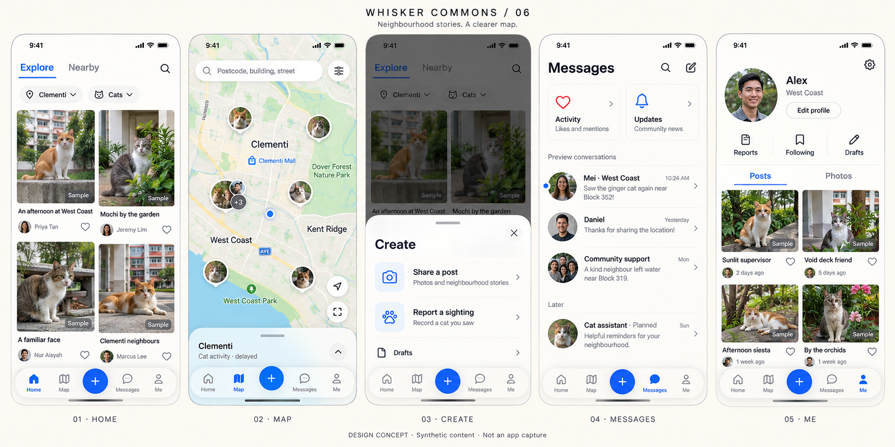
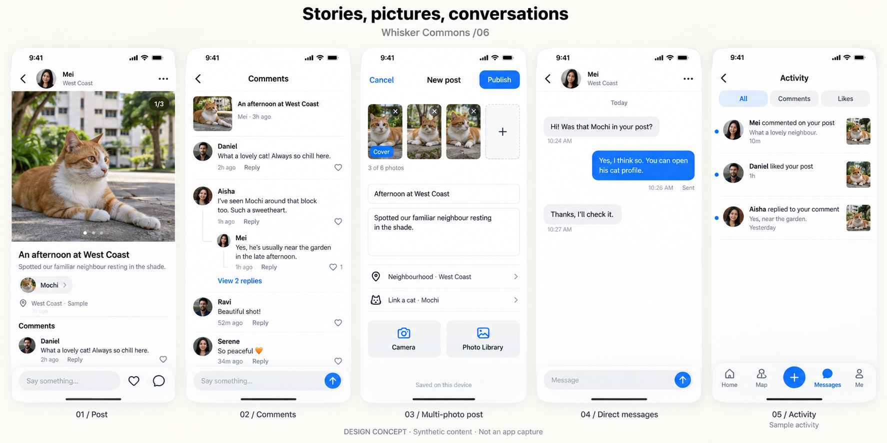

WHISKER COMMONS / 06 · 2026-09-11先看见猫，再参与邻里。
0.3.1 增量验收通过。社区合并到双列图片首页，地图展开更多空间，报告收进中央发布入口，新增真正可用的消息。保留已通过的原生毛玻璃与报告流程。
设计审阅稿，尚未实现。图片、人物、互动和消息均为合成示意。英文用于画板排版，应用继续支持中英切换；地图为示意，猫的位置仍按公开延迟与邻里范围处理。点击图片可看原尺寸。
首页 / 地图 / 发布 / 消息 / 我的

更小的视觉组件保留 44pt 点击范围。下拉刷新替代常驻按钮；地图默认折叠。用户已确认：先做私信与评论／点赞通知，再加管理员与 Bot。
帖子 / 评论 / 多图发布 / 私信 / 互动

建议首版最多 6 张图片，详情横滑，评论在下方。私信先做文字和消息请求；视频后续按完整上传、转码与播放流程交付。
按可测试的功能分批交付
| 顺序 | 内容 | 状态 |
|---|
| R1 | 紧凑布局、下拉刷新、折叠地图、猫头像簇 | 设计待审阅 |
| R2 · 0.4.0 | 多图与双列首页、中央发布、报告迁移、真实互动入口 | 待实现 |
| R3 · 0.4.1 | 用户私信、消息请求、子回复和通知完善 | 待实现 |
| R4 · 0.4.2 | 我的照片、所属社区、媒体清理调度 | 待实现 |
| R5 | 短视频；随后管理员与 Bot | 后续范围 |
图稿细节以规格为准：Map 统一地图图标；管理员／Bot 未接入前不出现；评论爱心须有真实功能；发布面板打开时背景导航不可操作。十个状态覆盖本次主要变化，原报告向导和已通过的其他子页沿用。